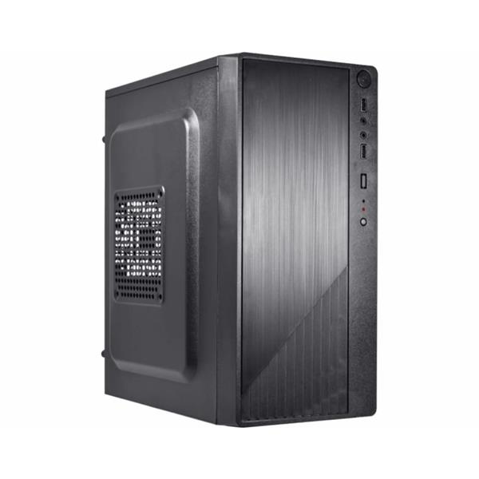

O Computador OFFICE é um desktop da linha Office voltado para uso corporativo eficiente, equipado com processador Intel Core i5-2400, 8GB de memória RAM DDR3 e armazenamento SSD SATA de 120GB. Não acompanha monitor e periféricos, e as imagens são meramente ilustrativas.
Você fala direto com nosso time pelo WhatsApp, do começo ao fim — para tirar dúvida, fechar o pedido e acompanhar a entrega. O prazo é de até 7 dias úteis, contado a partir da transportadora.
Todos os produtos são novos, lacrados e originais, vindos de fornecedores autorizados. Você tem 7 dias para troca ou devolução após o recebimento, conforme o Código de Defesa do Consumidor.
Temos técnicos em informática: montagem, configuração, otimização de desempenho, backup de dados e cabeamento estruturado — para computadores de uso pessoal, gamer e de escritório.